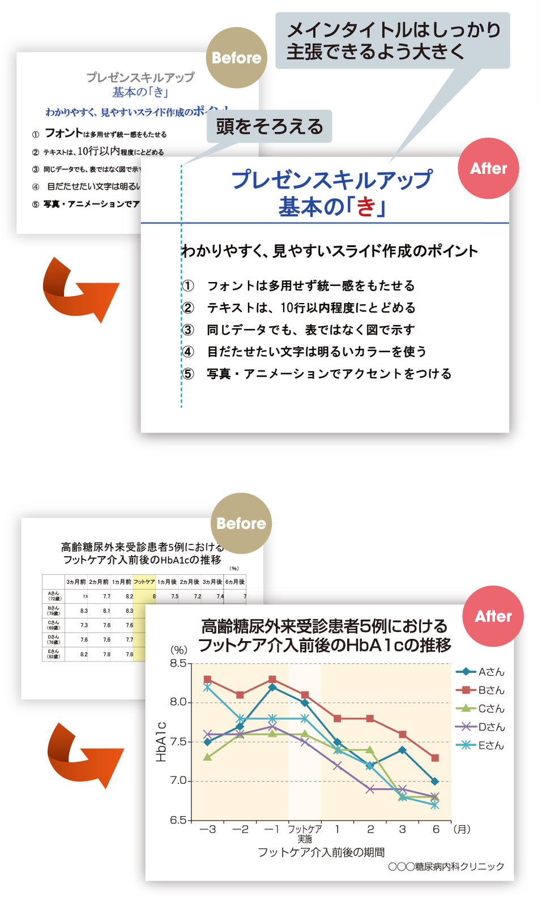
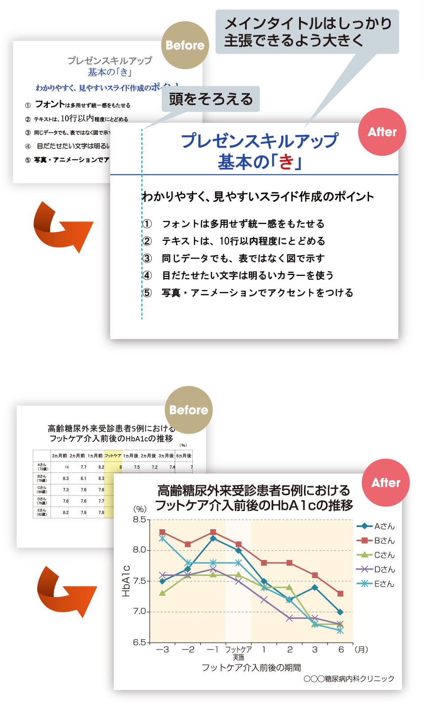

DM Trend Journal 32号
CDE Trendview
聞き手に情報を提示し、理解と納得を得る発表手段がプレゼンテーション(presentation)で、一般的にはプレゼンともいいます。学会での口演やポスター発表、身近なところでは院内のカンファレンスでの報告など、CDEとしてプレゼンする機会も多くなっています。プレゼンスキル(技術)をしっかり身につけ、ぜひ、積極的にチャレンジを。まずは、基本の「き」からスタートしましょう。
プレゼンの大切なポイントは、準備万端にすることです。
院内の患者情報の共有のための業務では、クリニカルパス等のフォーマットに従って記入し、発表することで目的を果たすことができます。
しかし、学会での口演やポスター発表は「誰に」「何を」「どうやって」伝えるのかという緻密なストーリー構成が求められます。そのため、プレゼンの前段階では、ストーリーに沿ったスライドの準備や抄録の作成などが必要となります。
まず、“導入”部分では、研究の背景や動向、問題点の提示、研究の目的など研究全体を簡潔に紹介します。
次に、“メインメッセージ”としての研究の方法、結果、考察を述べます。その際、マクロからミクロに移行したデータを示すとわかりやすいでしょう。
最後に“要約”として発表を通じて伝えたいことをシンプルにまとめます。
トーリー構成を決めたら、スライド作成に入ります。以下のようなポイントを念頭において作成すると、わかりやすく見やすいスライドになるでしょう。
❶フォントは、多用せず統一感をもたせる
フォントは通常、タイトルや強調したい言葉にはゴシック系を用います。じっくり読んでもらいたい言葉では、明朝系が読みやすいとされています。❷テキストは、10行以内程度にとどめる
テキストのみのスライドの場合、1画面は10行以内、できれば箇条書きにして6~7行にとどめ、理解してもらえるようにします。 
❸同じデータでも、表ではなく図で示す
研究内容を表すデータは、表になっている場合が多いものですが、円グラフや棒グラフなどの図を用いると、わかりやすくなります。❹文字は明るいカラーで
テンプレートは、シンプルに1種類、背景のカラーは、ダーク系か白が無難です。❺写真・アニメーション使用でアクセントを
スライド全体が、テキストと図だけの繰り返しでは、単調になりがちです。写真やアニメーションを使用するとアクセントになり、情報を多く伝えることにもつながります。ただ、多用は逆効果です。
DM Trend Journal 32号
肥満と糖尿病アドヒアランスを重視して 気長に、粘り強く、温かく
チーム力あり！ リーディングホスピタル認定看護師、CDE、リンクナースなど多彩な構成の糖尿病診療チームが活躍
Q&A あなたならどうする？太っている患者さんが理解できません。やせたいはずなのに、どうアプローチすればよいでしょう。
CDE room南中二三代さん(2007年CDE資格取得) 田口華代さん (2004年CDE資格取得)
CDE Trendviewプレゼンテーションスキル講座(上)
CDEのための学会レポート「第58回 日本糖尿病学会年次学術集会」レポート
Backnumber

第39号

第37号

第36号

第33号
第32号

第31号